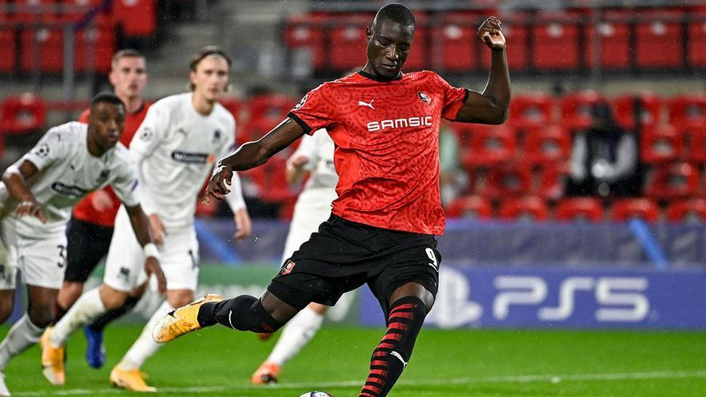

"El nuevo Lewandowki"
 Foto de Guirassy al Krasnodar
Foto de Guirassy al Krasnodar  Foto de Guirassy al Krasnodar
Foto de Guirassy al Krasnodar Albert Gracia-08/10/2023-Act. a las 12:31 CEST
Volver al inicio Volver a deportes"El nuevo Lewandowki"
 Foto de Guirassy al Krasnodar Perdía la Bundesliga algo más que un futbolista cuando Robert Lewandowski decidía poner fin a su aventura en Baviera y marcharse al FC Barcelona. Alemania perdía a la figura del gran goleador de la década, al heredero más natural del 'dios' Gerd Müller. Sin embargo, lo que no sabía el país germano es que, más allá de la llegada de Harry Kane al Bayern, pronto podía empezar a venerar a un nuevo artillero. Su nombre, para el gran público, es más que desconocido: Serhou Yadaly Guirassy, delantero guineano de 27 años. Llegó a Stuttgart la temporada pasada tras pasar toda su carrera a caballo entre la Ligue 1 y la Bundesliga. De cesión en cesión y sin terminar de arrancar. Sus últimas temporadas en Amiens y Rennes, eso sí, le llevaron directo al conjunto 'Die Roten', donde ha terminado de explotar por completo a sus ya 27 años.La campaña pasada logró anotar unos meritorios trece goles en los 26 partidos que disputó con la zamarra del Stuttgart, pero lo de esta temporada no tiene nombre. Bueno sí, el suyo. Guirassy se ha encargado casi él solito de meter a su equipo en lo más alto de la Bundesliga al anotar trece goles en apenas siete partidos disputados. Trece goles como trece soles para firmar el mejor arranque goleador de la historia de Alemania. Nadie había anotado tanto en tan poco tiempo. Ni siquiera Lewandowski y Gerd Müller. Palabras mayores. De hecho, de seguir a este ritmo como artillero, el delantero guineano superará la marca del polaco, que se marchó de la Bundesliga dejando en su haber el récord de 41 goles anotados en una sola temporada liguera. Una auténtica barbaridad que hay alguien dispuesto a superar. Nadie esperaba que, en la temporada en la que otro '9' de talla mundial como Harry Kane llegara a la Bundesliga, fuera a ser Guirassy el que se llevara todas las portadas. Albert Gracia-08/10/2023-Act. a las 12:31 CEST
Volver al inicio Volver a deportes